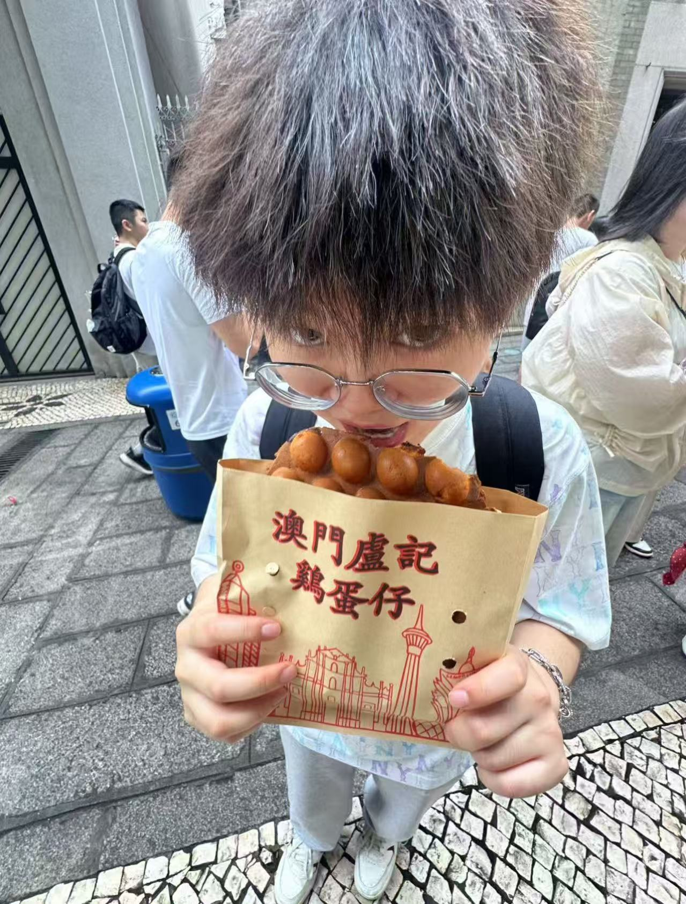

SLAIR: Structured Latent Flow Matching for All-in-One Image Restoration
European Conference on Computer Vision, 2026
Computer Science · Peking University
Exploring visual intelligence
and generative worlds.
I am a senior undergraduate student in Computer Science and Technology at Peking University. My research interests center on generative AI, including image and video generation, with a growing interest in world models.
Open to research internship opportunities

B.S. in Computer Science and Technology
Selected coursework
Large Language Models · Introduction to Artificial Intelligence · Computational Photography · Natural Language Processing · Introduction to Computer Vision
Mathematical Contest in Modeling / Interdisciplinary Contest in Modeling
34th Challenge Cup May Fourth Youth Science Award, Peking University
Peking University
22nd Castle Cup Programming Contest, Peking University
Peking University